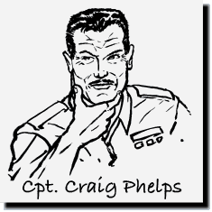
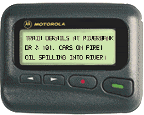

Morrigan (Thrashing about) No... NO
Morrigan (Looking around) Where does the last nightmare end and the new one begin?
Gracie (Coming up behind her) Don't care for the decor, eh?
Morrigan Oh, no... it's fine... I just
Gracie Morri, if we're to work together as a team, as well as be friends, you always need to be honest with me, no matter what
Morrigan (Twisting the cap off) Sounds like a deal... your place sucks... better?
Gracie Much
Morrigan I mean, it's just not my style but if it works for you...
Gracie There's no need to patronizing - by the way, you can find potpourri and lace in the bathroom
Morrigan (Pulling the blanket off) Now who's patronizing?
Gracie (Picking up the blanket from the floor) That must've been some dream
Morrigan (Serious tone) It was a tocsin
Gracie Excuse me, a what? - a poison?
Morrigan (Getting up and looking out the window) A portent... an augury... an omen
Gracie Is this where a little boy shows up on my doorstep with "666" on his head?
Morrigan They only happen to me before a life-altering event - sometimes good, most times... bad
Gracie (Trying not to freak) Um, okay... what did you see?
Morrigan A hand... a green hand... reaching up from the water
Gracie Ah, that's easy - those dead guys from this morning have you creeped out
Morrigan No... this was not the hand of a corpse, I've seen dead hands before... this one was very much alive
MM (Looking down at her hands) They... didn't seem completely human - they had... things... on them
Gracie (Reaching in a drawer for something) "Things" as in markings, growths, missing fingers?
Morrigan No
Gracie Oreo cookies?
Morrigan This is not a joke
Gracie (Holding up a package) I'm OFFERING you some cookies
Morrigan (Turning around and taking some) Thanks - my parents would fix me a plate of milk and cookies after I woke up from one of these things
Gracie I guess I should be grateful for only having crazy sex nightmares
Morrigan For as long as I can remember, I've had these "P-dreams" about one strange thing or another
Gracie "P" as in "premonition?"
Morrigan No, "P" as in I pee my pants
Gracie Well, I'm glad my cushion is already yellow
Morrigan Don't worry, I woke up before that happened
Gracie I think I need a smoke, I think you need a smoke, too
Morrigan I don't smoke cigarettes
Gracie Forget cigarettes, I've got something stronger in mind
Morrigan (Giving her a disparaging look) That's not going to change anything
Gracie Listen, you are completely fatigued - you've been on the road for the last few days, eating fast-food, not getting enough sleep and being forced to work the minute you get into town - of course your brain is going to play some nasty tricks on you!
Morrigan It doesn't come from my brain
Gracie ALRIGHTY THEN
Morrigan (Cramming two cookies in her mouth) But, now that you've mentioned it, a decent meal wouldn't hurt
Gracie Do you like mayonnaise?
Morrigan Uh... when it's ON a sandwich
Gracie Damn you, picky bitch!
Morrigan What a great image - such detail!
Gracie (Now sitting across from Morrigan) My ex-husband shot that - it was the only nice thing he ever gave me
Morrigan Did you two meet at school?
Gracie Yeah, we had the same photography classes - it was your traditional drunken Vegas wedding, the marriage only lasted six months - we mainly did it to piss off our folks... HOW DARE YOU MARRY A WHITE MAN/HOW DARE YOU MARRY A JAP GIRL
Morrigan Did you two love each other?
Gracie Oh sure - we still do, but we went in different directions - he prefers still shots on film, I prefer live shots on video... anyway, his life is one big paid vacation... and you can see what mine is
Morrigan Where does he work? - can I get a job there?
Gracie Jack Stacey is National Geographic's favorite "flash man" - as for a job there, stand in line!
Morrigan Wait a minute, for six months... you were "Gracie Stacey?"
Gracie Another reason we got hitched!
Morrigan Ha
Gracie Look at the time - all of this bonding over my ex and your freaky dreams is fun, but we need to get a move on
Morrigan (Stuffing one last cookie in her mouth) Mmm
Gracie (Packing some gear) We'll get something good to eat after the press conference
Morrigan Hey, we need to go over to KJ's house and get my stuff
Gracie I totally forgot that today is KJ's polo practice day, he won't be back there until later tonight - if at all - and I, quite frankly, don't feel like dealing with any of his lame family members - he has the trailer in his garage, we'll get it tomorrow, I promise
Morrigan (Grabbing her purse) Alright, let's roll
Sheriff The press conference starts in a few minutes - are we all clear on what we're going to say?
Craig This is now officially a homicide case - we'll be working with detectives - give the victims' names, ages, and residences - as for who killed them and why, further investigation is required... blah, blah, blah
Sheriff Don't forget to only take questions from media that can be controlled
Craig Of course
Anita Useless prick
Craig (Half-smile) The man himself or what he was adjusting?
Anita BOTH - it's obvious this guy is impotent on ALL levels - he's not doing his job
Craig He tries
Anita BULLSHIT - we now have twenty killings in the last two years - if the public ever finds out about the other highly-unusual, unsolved murders we've covered up, our careers are freaking toast!
Craig Calm yourself, Fiore
Anita (Now pacing) I just think it's time to find a new sheriff, that's all
Craig (Stretching his arms above his head and yawning) All in good time, Lieutenant, all in good time
Anita Some of the local fishermen are whispering about "Aleta Oscura" again
Craig (Sighing) That's all we need - find a way to keep them quiet
Anita (Raising an eyebrow) I think they might be on to something
Craig Oh please, don't tell me you believe in that crap?
Anita Listen, Craig, who or WHAT ever this thing is, it's way beyond some punk with a pistol playing vigilante or knocking off the hired help - we need to consider ALL possibilities here
Anita Those men this morning didn't just "wash up" on the beach... THEY WERE DELIVERED ON OUR GOD DAMN DOORSTEP... the coordinates and the slip number of the fishing boat were scrawled in the sand next to the bodies - it KNEW it would only take us a few minutes to figure out who these guys were
Craig Then why won't this thing point us in the direction of who is hiring these men to perform illegal activities?
Anita I guess she figures SOMEONE needs to do their job
Craig SHE?
Anita In Español, "Aleta Oscura" is the feminine form of... "Dark Fin"
Craig GIVE ME A FUCKING BREAK, ANITA
Anita (Looking at her watch) Maybe next time - we need to get ready
Craig (Fixing his cap) How irresistible do we look in these uniforms?
Anita (Checking her short, black hair) Between that and being on TV, we'll never run out of easy snatch
Anita Hola - great, I'll meet you outside
Craig That was quick!
Anita It was my SISTER, she's picking me up to have dinner with our folks after the press conference
Craig (Trying not to show his excitement) Is she here?
Anita Yeah... and so is her husband!
Craig Oh
Anita Sandy is going to be giving a statement on behalf of the university when we're finished
Craig That's good, we need some scientific authority to calm the public... confirm that "Jaws" or some giant squid didn't kill these men and that Duquesa Bay is, once again, safe for happy families
Anita Can he talk about the toxic waste on the boat?
Craig Only to say that we did an excellent job of cleaning up the little bit that was dumped - HE IS NOT TO MENTION THE NAMES OF THE BUSINESSES WE FOUND ON THE BAGS AND BARRELS
Anita (Taking the prepared statement off the desk) Understood - do you think Isaacson is going to be a problem?
Craig (Walking out of the office) Are you kidding? - Zach already nailed us this morning - he knows he needs information we can't give him... especially at a staged media event
Anita (Following) He's going underground
Craig That he will... and he'll also be keeping his distance from us tonight, so no worries there
Anita I've noticed KCON's new girl, Morrigan
Craig I'm sure you have
Anita Do you think she'll be a problem?
Craig Nah, because she's new in this town, she knows she has to get herself acclimated first before she starts rattling cages - McBride will keep quiet... this time
Craig (Clearing his throat) Can you all hear me? - please be quiet so we can get this thing started - are we ready? - OK... good evening, I am Captain Craig Phelps of the...
